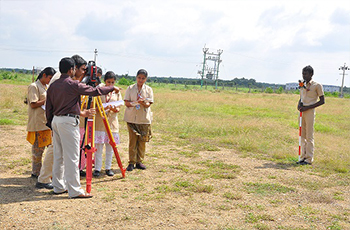

- Home
- Departments
- Civil Department
Civil Department
Civil engineering is arguably the oldest engineering discipline. Civil engineers touch many aspects of our everyday lives. Civil engineering is the design and maintenance of public works such as roads, bridges, water and energy systems as well as public facilities like ports, railways and airports. General civil engineers work closely with surveyors and specialized civil engineers to fit and serve fixed projects within their given site, community and terrain by designing grading, drainage, pavement, water supply, sewer service, electric and communications supply, and land divisions. General civil engineering is also referred to as site engineering, a branch of civil engineering that primarily focuses on converting a tract of land from one usage to another.
Degree Offered
- B.E.Civil Engineering
Teaching Faculty
Professors/Assistant Professors
- Mr. M. Jawahar M.E.(HoD-Assistant Professor)
- Mr. S. Rajeshkumar M.E.(Assistant Professor)
- Mr. S. Ramesh Kumar M.E.(Assistant Professor)
- Ms .S. Tamilarasi M.E.(Assistant Professor)
- Mr. S. Raman M.E.(Assistant Professor)
- Mr .G . Reventhkumar M.E.(Assistant Professor)
Non-Teaching Faculty
- Mr. K. Yokeswaran B.E. Civil
Our Department Faculty members have diverse specializations in areas of structural engineering, surveying, transportation engineering, environmental engineering, geotechnical engineering, pavement and materials engineering, construction and project management, steel and concrete design, water and wastewater engineering. The department has highly qualified staff and well equipped laboratories to cater the syllabus and the quest for student's knowledge.

There are currently seven laboratories with the department namely
- Strength of Materials Laboratory
- Hydraulics Laboratory
- Soil Mechanics Laboratory
- Concrete and Highway Engineering Laboratory
- Environmental Engineering Laboratory
- Survey Laboratory
- Computer Aided Design and Drafting Laboratory
The Civil Engineering Association (CEA) was formed with the primary aim of exposing potential civil engineers to the challenges of the profession. With both students and faculty as its members, the organization is one of the most active Civil Engineering Associations in India. CEA organizes activities like lectures by distinguished practitioners of the profession, video shows, competitions and socially relevant projects for the students throughout the year. The CEA prides itself in the lively interaction between the students and faculty. Students spend much of their time visiting project sites, developing community consensus, and preparing construction plans.
Technical Quiz
- Transforms and Partial Differential Equations
- Fluid Mechanics
- Construction Materials & Technology
- Surveying & Levelling
- Engineering Mechanics
- Water supply & Waste Water Engineering
- Design of reinforced concrete structural Elements
- Ground Improvement Techniques
- Advanced Construction Techniques
- Structural Analysis -1
- Prefabricated Structures
- Foundation Engineering
- Fire Safety Engineering
- Hydrology and Water Resources Engineering
- Human Values and Ethics
- Industrial Safety
- Estimation and Costing
- Airports and Harbours
Odd Semester |
Even Semester |